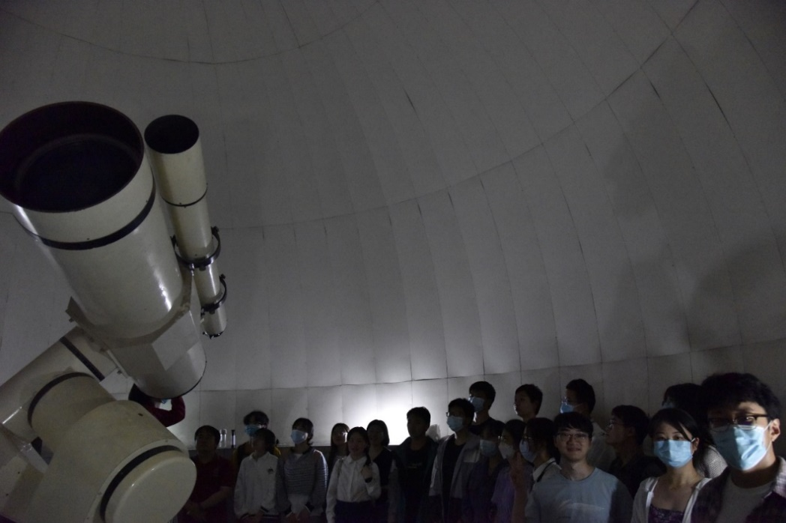

新闻稿撰写教程¶
新闻写作规范¶
新闻写作的一般格式
- 定义：新近发生事实的报道
- 标题：对新闻内容加以概括或评价的简短文字
- 导语：开头，介绍主要内容，引起读者兴趣
- 主体：新闻实事，必要的背景材料
字数：不超过1000字，以500~600字为宜（活动类）
图片：两到三张配图，配图在相应的文字段落，图片下方标注简单的文字说明
新闻稿的提交格式¶
要求：
- Word 文档，.doc 或者 .docx 后缀名
- 通篇文字使用仿宋，行距为1.0
- 图片使用嵌入式
- 不建议使用图片并排及其他非常规格式、不能旋转、不要组合。这是由于上传到平台过程中图片的的位置及word中的图片组合模板不会被平台识别而错乱。可以使用外部软件将多图合并成一张图后再导入 word
- 图片与上下文段落各空一行，居中
- 说明图片是什么的文字不用空行，一同居中
范文1：我校举行青年志愿者表彰大会与志愿服务嘉年华活动
12月5日，我校2021年青年志愿者表彰大会在西区学生活动中心学术报告厅举行。校团委书记杨晓果，部分院系团委书记和教师，获表彰的青年志愿者代表，校芳草社青年志愿者协会工作人员，研究生支教队全体队员，各院系青协、公益爱心类社团代表等参加会议。会议由校团委凌辉老师主持。

会上，校芳草社青年志愿者协会副会长张婧苗同学从我校志愿服务工作概览、专项志愿服务活动、各部门志愿服务活动、所获荣誉等方面汇报了我校2021年青年志愿服务工作。2021年，我校青年志愿服务工作取得了一系列积极成果，在新冠疫苗接种、核酸检测、毕业典礼等各项志愿服务工作中，涌现出一批优秀的青年志愿者和典型项目，其中研究生支教团更是荣获第十三届中国青年志愿者优秀组织奖，他们以实际行动践行志愿服务精神，展现出新时代青年良好的精神面貌。


党委学工部张震老师宣读了《关于表彰2021年度志愿服务先进个人的决定》。会议现场为获奖志愿者代表颁发奖杯和荣誉证书。第22届支教队员刘柯同学作为优秀志愿者代表发言，他分享了自身志愿服务经历中的两个小故事，讲述了成为一名志愿者后所带来的变化和感想，希望与同学们一道接力做好志愿服务工作。

会议还进行了重温志愿者誓词环节，全体志愿者庄严宣誓，践行志愿精神，传播先进文化，为构建和谐社会贡献力量！

杨晓果在讲话中首先对获表彰的志愿者们表示祝贺，对全校各级志愿服务组织在过去一年里的辛苦付出表示感谢。她指出，志愿服务是一项育人工作，要找好实际需求这一落脚点，讲好自己的志愿故事，弘扬志愿服务理念。她期望，全体青年志愿者能够坚守初心使命，从自身做起，传播志愿服务精神。各级志愿服务组织能够加强创新意识，搭建更多育人平台，为培育新时代“六有”大学生进一步作贡献。

12月6日，为庆祝第36个国际志愿者日，展现我校青年志愿服务工作整体风貌，学校在东区师生活动中心广场组织开展志愿服务嘉年华活动。全校21个志愿服务组织和部门通过话剧表演、手语教学、盲人体验、校园导游、校友接待礼仪、图书漂流、医疗知识科普等志愿服务精彩互动项目吸引了逾千名师生参与。志愿服务嘉年华活动是对我校青年志愿者风采的集中展示，增强了我校志愿者的荣誉感与使命感，传播了志愿服务精神，进一步服务引领同学们遵循“六有”要求茁壮成长。
（校团委、青年志愿服务中心、校芳草社青年志愿者协会）
范文2：校学生科普协会、校学生天文爱好者协会举办星空观测活动
每当夜幕来临，天空总是像笼罩着一层薄薄的细沙，显得那么幽静，那么美。抬头仰望夜空，放下一天的疲倦，舒展一天的情绪，学习带来的压力想来也会渐渐散去。为丰富科大在校学生的课余生活，增加同学们对于星空的了解，校学生科普协会与天文爱好者协会合作，于4月23日18:00-21:00在东区活动中心5楼会议室以及理化楼顶楼举办了“简易望远镜制作及春季星空观测”活动。本次活动邀请到了紫金山天文台硕士研究生陈冰洁同学、石头科普工作室郭庆同学以及原天文爱好者协会会长卢闻涛同学作为主讲嘉宾，为大家带来了有趣的科普讲解。
本次科普活动分为两个环节，分别是望远镜制作与星空观测。首先，18:00-19：30，陈冰洁、郭庆、卢闻涛三位嘉宾分别对望远镜成像原理及分类、春季星空特点、常用天文观测软件进行了讲解分享。同时为了让大家更加深刻的了解到望远镜的构成，在他们的指导下，参与同学们还进行了简易望远镜的现场制作。虽然没有任何经验，但同学们仍然凭借这一颗爱好天文的科研之心，完美的做出了一个个简易望远镜。
当夜幕降临，本次活动也到了重头戏。19:30-21:00爱好天文的同学们相约前往理化大楼的顶楼，一同进行了一次星空观测。沿途同学们还肉眼辨识了大角、角宿一、五帝座一等春季代表恒星和天狼星、参宿四、南河三等的冬季代表恒星。在理化大楼顶楼，同学们更是用专业的天文望远镜观测了鬼星团、轩辕十二、M42、M43等星体。
由于疫情防控需要，还有很多同学未能参加4.23的星空观测活动。但科普协会也感受到了大家对于星空的向往，在5月5日的19:00-21:00，科普协会再次在中区游泳馆楼顶以及理化大楼顶楼再一次举办了星空观测活动。活动当晚同学们在游泳馆顶楼用肉眼进行观测，嘉宾负责讲解，这也让到场的同学们收获许多星座的知识。经过讲解后，参与的同学基本能识别一些常见亮星。随后在嘉宾的带领下，同学们统一前往理化大楼天文台，观测到了月球、轩辕十二、鬼星团等天体。而在活动结束后，很多同学仍然意犹未尽，返程途中露天处观测了北斗七星、织女星等目前较难观测的星体。
通过望远镜制作以及星空观测活动，很多同学收获了关于天文方面的知识，也让大家在疫情中的心理压力得到了缓解。校学生科普协会也会积极为大家奉上更多好玩有趣的科普活动，让大家在不知不觉中获得知识上的提升。

（校学生社团管指委、校学生科普协会、校学生天文爱好者协会）